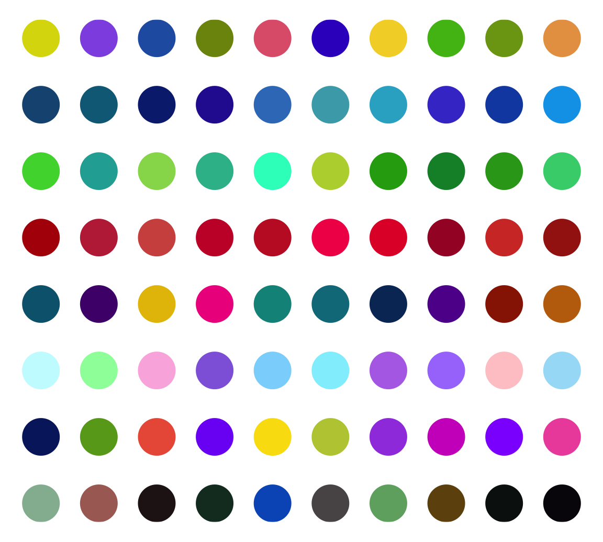

Chapter 3 Graphics
In this chapter, we will introduce low-level functions that add graphics to
the circle. Usages of most of these functions are similar as normal graphic
functions (e.g. points(), lines()). Combination use of these functions can
generate very complex circular plots.
All low-level functions accept sector.index and track.index arguments
which indicate which cell the graphics are added in. By default the graphics
are added in the “current” sector and “current” track, so it is recommended to
use them directly inside panel.fun function. However, they can also be used
in other places with explicitly specifying sector and track index. Following
code shows an example of using ciros.points().
circos.track(..., panel.fun = function(x, y) {
circos.points(x, y)
})
circos.points(x, y, sector.index, track.index)In this chapter, we will also discuss how to customize links and how to highlight regions in the circle.
3.1 Setting colors
Color is a major aesthetic element to map to the data points. In circlize there are two functions that provides customization of colors.
colorRamp2() provides an exact way for mapping continuous values. users specify a vector
of break values and a vector of colors, all the other colors are linearly interpolated between
the correspoding break values. In following example, we generate a color mapping which is symmetric
to zero.
col_fun = colorRamp2(c(-2, 0, 2), c("blue", "white", "red"))
col_fun(seq(-5, 1, by = 1)) # all the values smaller than -2 are all mapped to blue## [1] "#0000FFFF" "#0000FFFF" "#0000FFFF" "#0000FFFF" "#B38BFFFF" "#FFFFFFFF"
## [7] "#FF9E81FF"rand_color() implements the algorithem of randomColor.js.
See the following example:
par(mar = c(1, 1, 1, 1))
plot(NULL, xlim = c(1, 10), ylim = c(1, 8), axes = FALSE, ann = FALSE)
points(1:10, rep(1, 10), pch = 16, cex = 5,
col = rand_color(10, luminosity = "random"))
points(1:10, rep(2, 10), pch = 16, cex = 5,
col = rand_color(10, luminosity = "bright"))
points(1:10, rep(3, 10), pch = 16, cex = 5,
col = rand_color(10, luminosity = "light"))
points(1:10, rep(4, 10), pch = 16, cex = 5,
col = rand_color(10, luminosity = "dark"))
points(1:10, rep(5, 10), pch = 16, cex = 5,
col = rand_color(10, hue = "red", luminosity = "bright"))
points(1:10, rep(6, 10), pch = 16, cex = 5,
col = rand_color(10, hue = "green", luminosity = "bright"))
points(1:10, rep(7, 10), pch = 16, cex = 5,
col = rand_color(10, hue = "blue", luminosity = "bright"))
points(1:10, rep(8, 10), pch = 16, cex = 5,
col = rand_color(10, hue = "monochrome", luminosity = "bright"))
Actually there is another function col2value() which can convert back to the values
highly approximate to the original values from a vector of colors.
## [1] -2.0 -1.8 -1.6 -1.4 -1.2 -1.0 -0.8 -0.6 -0.4 -0.2 0.0 0.2 0.4 0.6 0.8
## [16] 1.0 1.2 1.4 1.6 1.8 2.0## [1] -2.000000e+00 -1.795620e+00 -1.595206e+00 -1.391406e+00 -1.189672e+00
## [6] -9.870220e-01 -7.853407e-01 -5.861849e-01 -3.901391e-01 -1.985154e-01
## [11] -7.401487e-17 1.761338e-01 3.592285e-01 5.454043e-01 7.429882e-01
## [16] 9.423823e-01 1.150753e+00 1.359655e+00 1.575352e+00 1.785834e+00
## [21] 2.000000e+003.2 Points
Adding points by circos.points() is similar as points() function. Possible
usages are:
circos.points(x, y)
circos.points(x, y, sector.index, track.index)
circos.points(x, y, pch, col, cex)There is a companion function circos.trackPoints() which adds points to all
sectors in a same track simultaneously. The input of circos.trackPoints()
must contain a vector of categorical factors, a vector of x values and a
vector of y values. X values and y values are split by the categorical
variable and corresponding subset of x and y values are internally sent to
circos.points(). circos.trackPoints() adds points to the “current” track
by default which is the most recently created track. Other tracks can also be
selected by explictly setting track.index argument.
circos.trackPoints() is simply implemented by circos.points() with a for
loop. However, it is more recommended to directly use circos.points() and
panel.fun which provides great more flexibility. Actually following code is
identical to above code.
Other low-level functions also have their companion circos.track*()
function. The usage is same as circos.trackPoints() and they will not be
further discussed in following sections.
3.3 Lines
Adding lines by circos.lines() is similar as lines() function. One
additional feature is that the areas under or above the lines can be filled by
specifing area argument to TRUE. Position of the baseline can be set to a
pre-defined string of bottom or top, or a numeric value which is the
position on y-axis. When area is set to TRUE, col controls the filled
color and border controls the color for the borders.
baseline argument is also workable when lty is set to "h". Note when lty
is set to "h", graphic parameters such as col can be set as a vector with
same length as x. Figure 3.1 illustrates supported lty
settings and area/baseline settings.
Figure 3.1: Line styles and areas supported in circos.lines()
Straight lines are transformed to curves when mapping to the circular layout
(Figure 3.2). Normally, curves are approximated by a
series of segments of straight lines. With more and shorter segments, there is
better approximation, but with larger size if the figures are generated into
e.g. PDF files, especially for huge dataset. Default length of segments in
circlize is a balance between the quality and size of the figure. You can
set the length of the unit segment by unit.circle.segments option in
circos.par(). The length of the segment is calculated as the length of the
unit circle (2\(\pi\)) divided by unit.circle.segments. In some scenarios,
actually you don’t need to segment the lines such as radical lines, then you can
set straight argument to TRUE to get rid of unnecessary segmentations.
Figure 3.2: Transformation of straight lines into curves in the circle.
Possible usages for circos.lines() are:
3.4 Segments
Line segments can be added by circos.segments() function. The usage is similar
as segments(). Radical segments can be added by setting straight to TRUE.
An example is in Figure 3.3.
circos.initialize(letters[1:8], xlim = c(0, 1))
circos.track(ylim = c(0, 1), track.height = 0.3, panel.fun = function(x, y) {
x = seq(0.2, 0.8, by = 0.2)
y = seq(0.2, 0.8, by = 0.2)
circos.segments(x, 0.1, x, 0.9)
circos.segments(0.1, y, 0.9, y)
})
Figure 3.3: Draw segments.
3.5 Text
Adding text by circos.text() is similar as text() function. Text is added on
the plot for human reading, thus, when putting the text on the circle, the
facing of text is very important. circos.text() supports seven facing options
which are inside, outside, clockwise, reverse.clockwise, downward,
bending.inside and bending.outside. Please note for bending.inside and
bending.outside, currently, single line text is only supported. If you want to
put bended text into two lines, you need to split text into two lines and add
each line by circos.text() separately. The different facings are illustrated
in Figure 3.4.
Figure 3.4: Text facings.
Possible usages for circos.text() are:
circos.text(x, y, labels)
circos.text(x, y, labels, sector.index, track.index)
circos.text(x, y, labels, facing, niceFacing, adj, cex, col, font)If, e.g., facing is set to inside, text which is on the bottom half of the
circle is still facing to the top and hard to read. To make text more easy to
read and not to hurt readers’ neck too much, circos.text() provides
niceFacing option which automatically adjust text facing according to their
positions in the circle. niceFacing only works for facing value of
inside, outside, clockwise, reverse.clockwise, bending.inside and
bending.outside.
When niceFacing is on, adj is also adjusted according to the corresponding
facings. Figure 3.5 illustrates text positions under
different settings of adj and facing. The red dots are the positions of the texts.

Figure 3.5: Human easy text facing.
adj is internally passed to text(), thus, it actually adjusts text
positions either horizontally or vertically (in the canvas coordinate). If the
direction of the offset is circular, the offset value can be set as degrees
that the position of the text is adjusted by wrapping the offset by
degree().
As circos.text() is applied in the data coordiante, offset can be directly
added to x or/and y as a value measured in the data coordinate. An absolute
offset can be set by using e.g. mm_x() (in x direction) and mm_y() (in y
direction).
3.6 Rectangles and polygons
Theoretically, circular rectangles and polygons are all polygons. If you imagine
the plotting region in a cell as Cartesian coordinate, then circos.rect()
draws rectangles. In the circle, the up and bottom edge become two arcs. Note this
function can be vectorized.
circos.rect(xleft, ybottom, xright, ytop)
circos.rect(xleft, ybottom, xright, ytop, sector.index, track.index)
circos.rect(xleft, ybottom, xright, ytop, col, border, lty, lwd)circos.polygon() draws a polygon through a series of points in a cell.
Please note the first data point must overlap to the last data point.
In Figure 3.6, the area of standard deviation of the
smoothed line is drawn by circos.polygon(). Source code can be found in the
Examples section of the circos.polygon() help page.
Figure 3.6: Area of standard deviation of the smoothed line.
3.7 Axes
Mostly, we only draw x-axes on the circle. circos.axis() or circos.xaxis()
privides options to customize x-axes which are on the circular direction. It
supports basic functionalities as axis() such as defining the breaks and
corresponding labels. Besides that, the function also supports to put x-axes to
a specified position on y direction, to position the x-axes facing the center of
the circle or outside of the circle, and to customize the axes ticks. The at
and labels arguments can be set to a long vector that the parts which exceed
the maximal value in the corresponding cell are removed automatically. The
facing of labels text can be optimized by labels.niceFacing (by default it is
TRUE).
Figure 3.7 illustrates different settings of x-axes. The explanations are as follows:
- a: Major ticks are calculated automatically, other settings are defaults.
- b: Ticks are pointing to inside of the circle, facing of tick labels is set to
outside. - c: Position of x-axis is
bottomin the cell. - d: Ticks are pointing to the inside of the circle, facing of tick labels is
set to
reverse.clockwise. - e: manually set major ticks and also set the position of x-axis.
- f: replace numeric labels to characters, with no minor ticks.
- g: No ticks for both major and minor, facing of tick labels is set to
reverse.clockwise. - h: Number of minor ticks between two major ticks is set to 2. Length of ticks
is longer. Facing of tick labels is set to
clockwise.

Figure 3.7: X-axes
As you may notice in the above figure, when the first and last axis labels exceed data ranges on x-axis in the corresponding cell, their positions are automatically adjusted to be shifted inwards in the cell.
Possible usage of circos.axis() is as follows. Note h can be bottom, top
or a numeric value, and major.tick.length can be set with mm_y()/cm_y()/inch_y().
circos.axis(h)
circos.axis(h, sector.index, track.index)
circos.axis(h, major.at, labels, major.tick, direction)
circos.axis(h, major.at, labels, major.tick, labels.font, labels.cex,
labels.facing, labels.niceFacing)
circos.axis(h, major.at, labels, major.tick, minor.ticks,
major.tick.length, lwd)Y-axis is also supported by circos.yaxis(). The usage is similar as
circos.axis() One thing that needs to be note is users need to manually adjust
gap.degree/gap.after in circos.par() to make sure there are enough spaces for y-axes.
(Figure 3.8)
circos.yaxis(side) # break values are automatically calculated
circos.yaxis(side, at, labels, sector.index, track.index)Figure 3.8: Y-axes
3.8 Barplots, boxplots and violin plots
circos.barplot(), circos.boxplot() and circos.violin() are introduced
together because the values on x-axes are the integer indices of bars, boxes
or violins for which xlim should be properly set in circos.initialize().
For circular barplots, users can either specify a vector which generates a “normal” barplot, or a matrix which generates a stacked barplot (Figure 3.9).
par(mfrow = c(1, 2))
circos.initialize(letters[1:4], xlim = c(0, 10))
circos.track(ylim = c(0, 1), panel.fun = function(x, y) {
value = runif(10)
circos.barplot(value, 1:10 - 0.5, col = 1:10)
})
circos.track(ylim = c(-1, 1), panel.fun = function(x, y) {
value = runif(10, min = -1, max = 1)
circos.barplot(value, 1:10 - 0.5, col = ifelse(value > 0, 2, 3))
})
circos.clear()
circos.initialize(letters[1:4], xlim = c(0, 10))
circos.track(ylim = c(0, 4), panel.fun = function(x, y) {
value = matrix(runif(10*4), ncol = 4)
circos.barplot(value, 1:10 - 0.5, col = 2:5)
})
Figure 3.9: Circular barplots.
For circular boxplots, the boxes can be drawn one-by-one by providing a vector for each box, or drawn in batch with a list/matrix as input (Figure 3.10).
par(mfrow = c(1, 2))
circos.initialize(letters[1:4], xlim = c(0, 10))
circos.track(ylim = c(0, 1), panel.fun = function(x, y) {
for(pos in seq(0.5, 9.5, by = 1)) {
value = runif(10)
circos.boxplot(value, pos)
}
})
circos.clear()
circos.initialize(letters[1:4], xlim = c(0, 10))
circos.track(ylim = c(0, 1), panel.fun = function(x, y) {
value = replicate(runif(10), n = 10, simplify = FALSE)
circos.boxplot(value, 1:10 - 0.5, col = 1:10)
})
Figure 3.10: Circular boxplots.
For circular violin plots, the violins can be drawn one-by-one by providing a vector for each violin, or drawn in batch with a list/matrix as input (Figure 3.11).
Please note, to make it comparable between violins, max_density argument should be set.
par(mfrow = c(1, 2))
circos.initialize(letters[1:4], xlim = c(0, 10))
circos.track(ylim = c(0, 1), panel.fun = function(x, y) {
for(pos in seq(0.5, 9.5, by = 1)) {
value = runif(10)
circos.violin(value, pos)
}
})
circos.clear()
circos.initialize(letters[1:4], xlim = c(0, 10))
circos.track(ylim = c(0, 1), panel.fun = function(x, y) {
value = replicate(runif(10), n = 10, simplify = FALSE)
circos.violin(value, 1:10 - 0.5, col = 1:10)
})Figure 3.11: Circular violin plots.
3.9 Circular arrows
circos.arrow() draws circular arrows parallel to the circle. Since the arrow
is always parallel to the circle, on x-direction, the start and end position
of the arrow need to be defined while on the y-direction, only the position of
the center of arrow needs to be defined. Also width controls the width of
the arrow and the length is defined by x2 - x1. arrow.head.width and
arrow.head.length control the size of the arrow head, and values are
measured in the data coordinate in corresponding cell. tail controls the
shape of the arrow tail. Note for width, arrow.head.width and
arrow.head.length, the value can be set by e.g. mm_x(), mm_y() with
absolute units. If users want to draw the arrows in the reversed direction,
set arrow.position argument to start. See Figure
3.12.
par(mfrow = c(1, 2))
circos.initialize(letters[1:4], xlim = c(0, 1))
col = rand_color(4)
tail = c("point", "normal", "point", "normal")
circos.track(ylim = c(0, 1), panel.fun = function(x, y) {
circos.arrow(x1 = 0, x2 = 1, y = 0.5, width = 0.4,
arrow.head.width = 0.6, arrow.head.length = cm_x(1),
col = col[CELL_META$sector.numeric.index],
tail = tail[CELL_META$sector.numeric.index])
}, bg.border = NA, track.height = 0.4)
circos.clear()
circos.initialize(letters[1:4], xlim = c(0, 1))
tail = c("point", "normal", "point", "normal")
circos.track(ylim = c(0, 1), panel.fun = function(x, y) {
circos.arrow(x1 = 0, x2 = 1, y = 0.5, width = 0.4,
arrow.head.width = 0.6, arrow.head.length = cm_x(1),
col = col[CELL_META$sector.numeric.index],
tail = tail[CELL_META$sector.numeric.index],
arrow.position = "start")
}, bg.border = NA, track.height = 0.4)Figure 3.12: Circular arrows.
Circular arrows are useful to visualize events which happen in circular style,
such as different phases in cell cycle. Following example code visualizes four
phases in cell cycle where the width of sectors correspond to the hours in
each phase (Figure 3.13). Also circular arrows can be used to
visualize genes in circular genome where the arrows represent the orientation
of the gene, such as mitochondrial genome
or plasmid genome. Just remember if the gene
is in the reverse strand or the negative strand, set arrow.position = "start" to
draw the arrow in the other direction.
cell_cycle = data.frame(phase = factor(c("G1", "S", "G2", "M"), levels = c("G1", "S", "G2", "M")),
hour = c(11, 8, 4, 1))
color = c("#66C2A5", "#FC8D62", "#8DA0CB", "#E78AC3")
circos.par(start.degree = 90)
circos.initialize(cell_cycle$phase, xlim = cbind(rep(0, 4), cell_cycle$hour))
circos.track(ylim = c(0, 1), panel.fun = function(x, y) {
circos.arrow(CELL_META$xlim[1], CELL_META$xlim[2],
arrow.head.width = CELL_META$yrange*0.8, arrow.head.length = cm_x(0.5),
col = color[CELL_META$sector.numeric.index])
circos.text(CELL_META$xcenter, CELL_META$ycenter, CELL_META$sector.index,
facing = "downward")
circos.axis(h = 1, major.at = seq(0, round(CELL_META$xlim[2])), minor.ticks = 1,
labels.cex = 0.6)
}, bg.border = NA, track.height = 0.3)Figure 3.13: Cell cycle.
3.10 Raster image
circos.raster() is used to add a raster image at a certain position in the
circle with proper rotation. The first input variable should be a raster
object or an object that can be converted by as.raster(). Facing of the
image is controlled by facing and niceFacing arguments which are similar
as in circos.text(). When value of facing is one of inside, outside,
reverse.clockwise, clockwise and downward, the size of raster image
should have absolute values which should be specified in the form of number- unit such as "20mm", "1.2cm" or "0.5inche". If only one of width and
height is specified, the other one is automatically calculated by using the
aspect ratio of the original image. Following example shows five types of
facings of the raster image (figure 3.14).
library(png)
image = system.file("extdata", "Rlogo.png", package = "circlize")
image = as.raster(readPNG(image))
circos.par(start.degree = 90)
circos.initialize(letters[1:5], xlim = c(0, 1))
all_facing_options = c("inside", "outside", "reverse.clockwise", "clockwise", "downward")
circos.track(ylim = c(0, 1), panel.fun = function(x, y) {
circos.raster(image, CELL_META$xcenter, CELL_META$ycenter, width = "1cm",
facing = all_facing_options[CELL_META$sector.numeric.index])
circos.text(CELL_META$xcenter, CELL_META$ycenter,
all_facing_options[CELL_META$sector.numeric.index],
facing = "inside", niceFacing = TRUE)
})Figure 3.14: Five facings of raster image.
Also facing can be set to bending.inside and bending.outside that the
image is filled to a circular rectangle. The strategy is to plot each original
pixel as a small circular rectangle by circos.rect(), thus, the plotting is
quite slow. If the original image is too huge, scaling argument can be set
to reduce the size of the original image.
Following code draws the image of the cover of this book which is a circular style of Keith Haring’s doodle (Figure 3.15). The original source of the plot is from http://www.thegreenhead.com/imgs/keith-haring-double-retrospect-worlds-largest-jigsaw-puzzle-2.jpg.
{kind=link}
load(system.file("extdata", "doodle.RData", package = "circlize"))
circos.par("cell.padding" = c(0, 0, 0, 0))
circos.initialize(letters[1:16], xlim = c(0, 1))
circos.track(ylim = c(0, 1), panel.fun = function(x, y) {
img = img_list[[CELL_META$sector.numeric.index]]
circos.raster(img, CELL_META$xcenter, CELL_META$ycenter,
width = CELL_META$xrange, height = CELL_META$yrange,
facing = "bending.inside")
}, track.height = 0.25, bg.border = NA)
circos.track(ylim = c(0, 1), panel.fun = function(x, y) {
img = img_list[[CELL_META$sector.numeric.index + 16]]
circos.raster(img, CELL_META$xcenter, CELL_META$ycenter,
width = CELL_META$xrange, height = CELL_META$yrange,
facing = "bending.inside")
}, track.height = 0.25, bg.border = NA)
circos.clear()
Figure 3.15: Fill raster image to the cell.
3.11 Links
Links or ribbons are important part for the circular visualization. They are
used to represent relations or interactions between sectors. In circlize,
circos.link() draws links between single points and intervals. There are
four mandatory arguments which are index for the first sector, positions on
the first sector, index for the second sector and positions on the second
sector. If the positions on the two sectors are all single points, the link
represents as a line. If the positions on the two sectors are intervals, the link
represents as a robbon (Figure 3.16). Possible usage for
circos.link() is as follows.
circos.link(sector.index1, 0, sector.index2, 0)
circos.link(sector.index1, c(0, 1), sector.index2, 0)
circos.link(sector.index1, c(0, 1), sector.index2, c(1, 2))
circos.link(sector.index1, c(0, 1), sector.index2, 0, col, lwd, lty, border)Figure 3.16: Different types of links.
The position of link end is controlled by rou (sorry the name should be
called rho, sorry for my Chinese Greek accent). By default, it is the bottom of the most inside track and
normally, you don’t need to care about this setting. The two ends of the link
are located in a same circle by default. The positions of two ends can be
adjusted with different values for rou1 and rou2 arguments. See Figure
3.17.
circos.link(sector.index1, 0, sector.index2, 0, rou)
circos.link(sector.index1, 0, sector.index2, 0, rou1, rou2)Figure 3.17: Positions of link ends.
The height of the link is controlled by h argument. In most cases, you don’t
need to care about the value of h because they are internally calculated
based on the width of each link. However, when the link represents as a ribbon
(i.e. link from point to interval or from interval to interval), It can not
always ensure that one border is always below or above the other, which means,
in some extreme cases, the two borders are intersected and the link would be
messed up. It happens especially when position of the two ends are too close
or the width of one end is extremely large while the width of the other end is
too small. In that case, users can manually set height of the top and bottom
border by h and h2 (Figure 3.18).
circos.link(sector.index1, 0, sector.index2, 0, h)
circos.link(sector.index1, 0, sector.index2, 0, h, h2)Figure 3.18: Adjust link heights.
When there are many links, the height of all links can be systematically adjusted by h.ratio (Figure 3.19).
The value is between 0 and 1.
Figure 3.19: Adjust link heights by ‘h.ratio’.
The border of link (if it is a ribbon) or the link itself (if it is a line) is
in fact a quadratic Bezier curve, thus you can control the shape of the link
by w and w2 (w2 controls the shape of bottom border). See Figure
3.20 for examples. For more explanation of w, please refer
to http://en.wikipedia.org/wiki/B%C3%A9zier_curve#Rational_B.C3.A9zier_curves.
circos.link(sector.index1, 0, sector.index2, 0, w)
circos.link(sector.index1, 0, sector.index2, 0, w, w2)Figure 3.20: Different link shapes.
When the links represent as ribbons and the two ends overlap, the links will be de-generated as a ‘hill’ (Figure 3.21).

Figure 3.21: Link as a hill.
Links can have arrows to represent the directions. The directional argument
controls how to add arrows. A value of 0 means there is no direction, 1
means the direction is from end 1 to end 2, -1 means the direction is from
end 2 to end 1, and 2 means bi-direction. If the link represents as a
ribbon, a line with arrow will be added in the center of the link to represent
directions. See Figure 3.22.
Type of arrows is controlled by arr.type argument and it is actually passed
to Arrowhead() defined in shape package. Besides the arrow types
supported in shape package, there is an additional arrow type big.arrow
which turns the robbon into a big arrow (Figure 3.22).
Unequal height of the link ends can also represent directions which we will
discuss more with the chordDiagram() function.
circos.link(sector.index1, 0, sector.index2, 0, directional = 1)
circos.link(sector.index1, c(0, 1), sector.index2, c(0, 1), directional = -1)Figure 3.22: Link with arrows.
3.12 Highlight sectors and tracks
draw.sector() draws sectors, rings or their parts. This function is useful
if you want to highlight some parts of your circular plot. it needs arguments
of the position of circle center (by default c(0, 0)), the start degree and
the end degree for sectors, and radius for two edges (or one edge) which are
up or bottom borders. draw.sector() is independent from the circular plot.
Possible usage of draw.sector() is as follows.
draw.sector(start.degree, end.degree, rou1)
draw.sector(start.degree, end.degree, rou1, rou2, center)
draw.sector(start.degree, end.degree, rou1, rou2, center, col, border, lwd, lty)Directions from start.degree and end.degree is important for drawing sectors.
By default, it is clock wise.
Following code shows examples of draw.sector() (Figure 3.23).
par(mar = c(1, 1, 1, 1))
plot(c(-1, 1), c(-1, 1), type = "n", axes = FALSE, ann = FALSE, asp = 1)
draw.sector(20, 0)
draw.sector(30, 60, rou1 = 0.8, rou2 = 0.5, clock.wise = FALSE, col = "#FF000080")
draw.sector(350, 1000, col = "#00FF0080", border = NA)
draw.sector(0, 180, rou1 = 0.25, center = c(-0.5, 0.5), border = 2, lwd = 2, lty = 2)
draw.sector(0, 360, rou1 = 0.7, rou2 = 0.6, col = "#0000FF80")Figure 3.23: General usage of ‘draw.sector()’.
In order to highlight cells in the circular plot, we can use
get.cell.meta.data() to get the information of positions of cells. E.g. the
start degree and end degree can be obtained through cell.start.degree and
cell.end.degree, and the position of the top border and bottom border can be
obtained through cell.top.radius and cell.bottom.radius. Following code
shows several examples to highlight sectors and tracks.
First we create a circular plot with eight sectors and three tracks.
sectors = letters[1:8]
circos.initialize(sectors, xlim = c(0, 1))
for(i in 1:3) {
circos.track(ylim = c(0, 1))
}
circos.info(plot = TRUE)If we want to highlight sector a (Figure 3.24):
draw.sector(get.cell.meta.data("cell.start.degree", sector.index = "a"),
get.cell.meta.data("cell.end.degree", sector.index = "a"),
rou1 = get.cell.meta.data("cell.top.radius", track.index = 1),
col = "#FF000040")If we want to highlight track 1 (Figure 3.24):
draw.sector(0, 360,
rou1 = get.cell.meta.data("cell.top.radius", track.index = 1),
rou2 = get.cell.meta.data("cell.bottom.radius", track.index = 1),
col = "#00FF0040") If we want to highlight track 2 and 3 in sector e and f (Figure 3.24):
draw.sector(get.cell.meta.data("cell.start.degree", sector.index = "e"),
get.cell.meta.data("cell.end.degree", sector.index = "f"),
rou1 = get.cell.meta.data("cell.top.radius", track.index = 2),
rou2 = get.cell.meta.data("cell.bottom.radius", track.index = 3),
col = "#0000FF40")If we want to highlight specific regions such as a small region inside cell
h:2, we can use circlize() to calculate the positions in the polar
coordinate. But always keep in mind that x-axis in the cell are always clock
wise. See Figure 3.24.
pos = circlize(c(0.2, 0.8), c(0.2, 0.8), sector.index = "h", track.index = 2)
draw.sector(pos[1, "theta"], pos[2, "theta"], pos[1, "rou"], pos[2, "rou"],
clock.wise = TRUE, col = "#00FFFF40")
circos.clear()Figure 3.24: Highlight sectors and tracks.
If the purpose is to simply highlight complete cells, there is a helper
function highlight.sector() for which you only need to specify index for
sectors and tracks that you want to to highlight. Paddings of the highligted
regions can be set by padding argument which should contain four values
representing ratios of the width or height of the highlighted region (Figure 3.25).
One advantage of highlight.sector() is that it supports to add text in the
highlighted regions. By default, the text is drawn at that center of the
highlighted region. The position on the radical direction can be set by
text.vjust argument either by a numeric value or a string in form of "2 inches" or "-1.2cm".
sectors = letters[1:8]
circos.initialize(sectors, xlim = c(0, 1))
for(i in 1:4) {
circos.track(ylim = c(0, 1))
}
circos.info(plot = TRUE)
highlight.sector(c("a", "h"), track.index = 1, text = "a and h belong to a same group",
facing = "bending.inside", niceFacing = TRUE, text.vjust = "6mm", cex = 0.8)
highlight.sector("c", col = "#00FF0040")
highlight.sector("d", col = NA, border = "red", lwd = 2)
highlight.sector("e", col = "#0000FF40", track.index = c(2, 3))
highlight.sector(c("f", "g"), col = NA, border = "green",
lwd = 2, track.index = c(2, 3), padding = c(0.1, 0.1, 0.1, 0.1))
highlight.sector(sectors, col = "#FFFF0040", track.index = 4)
Figure 3.25: Highlight sectors.
3.13 Work together with the base graphic system
circlize is built on the base R graphic system, then, of course the base graphic
functions can be used in combination with circlize functions. On the other hand,
circlize() converts data points from the data coordinates to the canvas coordinates
where the base graphic function can be directly applied.
Normally, the base functions such as title(), text(), legend() can be used to
add extra information on the plot (Figure 3.26).
Sometimes, when the text or other graphics are far from the circle, you may set par(xpd = NA)
so that the plotting is not clipped.
sectors = letters[1:4]
circos.initialize(sectors, xlim = c(0, 1))
circos.track(ylim = c(0, 1), panel.fun = function(x, y) {
circos.points(1:20/20, 1:20/20)
})
text(0, 0, "This is\nthe center", cex = 1.5)
legend("bottomleft", pch = 1, legend = "This is the legend")
title("This is the title")Figure 3.26: Work with base graphic functions.